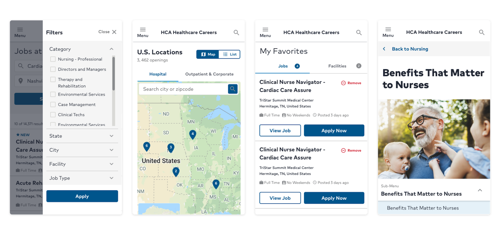
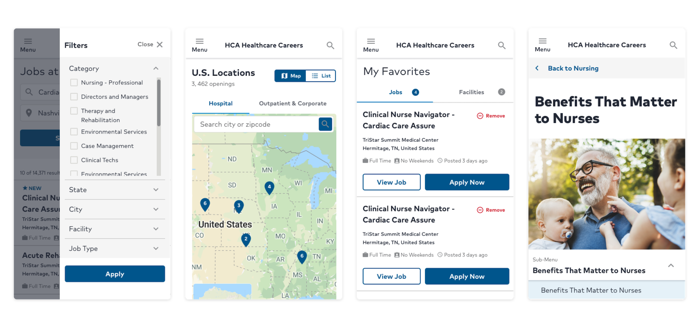
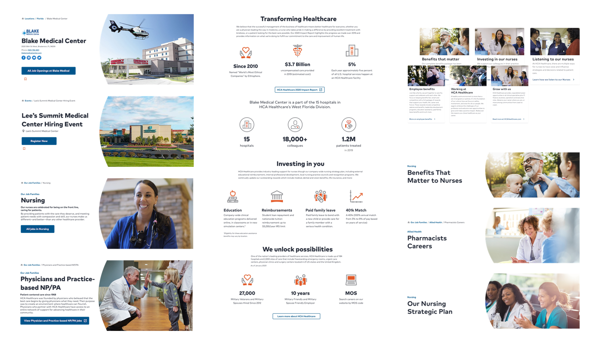

HCA Healthcare Careers Site
View live siteOverview
With nearly 800k visitors a month, the HCA Healthcare careers site wasn't just in for a makeover. The UX team (us, hi!) was contacted to help reconstruct the digital experience as a whole. What do visitors wish to achieve? How do they feel? How intuitive is the current state of the site and how can we improve that? What is the current experience of scouting a career in healthcare?
Timeline
7 months (about 12 sprints)
Project Status
Launched üöÄ (View it here)
Team
- Ryan: Project Manager
- Cyd: Lead Researcher
- Rachel (Me): Lead UX Designer
- Cora: Design & Research Assist
- Kristin: Design Assist
My Roles in depth
- Market analyses
- Journey Mapping & Storyboarding
- Wireframing
- Prototyping
- Hi-Fidelity Design
- Development collaboration
Thank you to everyone who donated the hours and time to bring this project to life. Saying this was a collaborative experience is an understatement. Passion and perseverance walked alongside this launch up until the final seconds.
Problem Statement
Our problem statement signifies key ideas that were top of mind throughout the entirety of the redesign. These pain points were emphasized by Talent Acquisition and key stakeholders. They gave the us direction when administering market analyses, stakeholder interviews and usability tests.
- Employee Value Proposition (EVP) needs to be clear and emphasized
- The site should build trust and confidence with the user by incorporating brand strategy and neighborly content
- Engage the candidates with the user experience and architecture of the site
- The site should be intuitive and conversion-focused
- Zero to one click job search with accommodating filter options
- High-impact content (inspiring, informative, expressive, entertaining)
- Diversity and inclusion should be showcased well
Discovery Phase
In the discovery phase you’ll find the previously-mentioned stakeholder interviews, heatmap analyses from CrazyEgg, persona establishment, journey mapping and storyboarding, current market competitor analysis, pattern analysis and a new sitemap proposal.
Stakeholder Interviews
We met with a variety of stakeholders who are involved with HCA Heathcare’s recruiting and marketing efforts. With nearly unanimous feedback, we collected information on the key personas (main site users), high-level objectives, current pros/cons of the site, ease of use, competitors to watch and site ratings.
 Average Stakeholder Ratings
Average Stakeholder Ratings
- Current usability of the site: 3.1 due to search glitches, long page loads, and the talent network ambiguity
- Current site structure: 3.1 due to lengthy top navigation link verbiage, the lack of landing page CTAs, inability to search for multiple cities/locations at once and the journey of reaching a job posting in over 4 clicks.
- Current content: 2.8 since the videos could be more present, career programs are too underrated, and more trust could be built with testimonials, GlassDoor links in the footer social icons and real imagery.
- Visual design: 2.6 from its outdated appeal, “cold hand” images, too few lifestyle imagery, and extremely wordy pages.
Current visitor behavior
CrazyEgg’s optimization-intended heatmaps allowed for us to see the most frequently visited areas of the site. We immediately noticed that the hottest spot of the Careers landing page was search. This was due to searching being the site’s primary action and also because the design “below the fold” wasn’t as engaging as it could be. Nothing was screaming for attention (yet). See below just how hot those search fields are compared to the rest of the page!
Personas & Journey Mapping
When configuring new site architecture, design intention and
substantiation, it’s essential to identify the key personas. In
this case, the Careers site’s personas were
candidates, incoming nurses, internal transfers, students,
recruiters, casual job seekers and executive leaders.
This list may seem long but typically there are a few handfuls
of users to account for within a site. While they may encompass
a large variety of personality and roles,
it’s important to define their intentions when navigating the
Careers site. Enter journey mapping.
Journey Mapping
We constructed main task flows via sketched storyboards and an interface-facing (what a word) user flow. Using the interface screenshots to show what the user was interacting with during each step in the flow helped us identify the areas of poor engagement, information and the unfortunate amount of clicks it took to complete the task.

Journey maps walk alongside a key persona as they go through the motions to complete a task. We identify every step the user may take and what emotions they are experiencing in each instance. This helped us capture the current emotional state of the website, where any unsatisfactory moments occur and why.
Storyboarding
Using hand-drawn illustrations and actual screen views, we constructed the journeys of different tasks. The number of clicks, steps, points of confusion and overall flow can be accounted for in the storyboard results.

Competitor Analysis
In order to establish site architecture, design or proposition,
we looked to the current market of careers sites. This included
24 competitors and other big-name companies
that may offer some insight -
AdventHealth, Ascension, Tenet Health, United, JC Penny, RBS,
Comcast, Amazon and many more.
In this analysis we discovered how other companies answered our
problem statement attributes, site strengths (what to do), site
weaknesses (what not to do) and copy writing including images
and videos. We also captured different design patterns we found
inspiring such as job search methods, locations, landing page
designs and site personability portrayals.
 Key Market Analysis Takeaways
Key Market Analysis Takeaways
- Searchability: do not hide the search behind a navigation tab, keep it front and center by promoting search opportunities throughout the entire site journey.
- Filtering: above-the-content filtering like LinkedIn can free up horizontal real estate of the page. Also allowing for multiple filters and clear active filters during the job search.
- Personalization: basing a job search “by your interests” as a user and having the ability to save jobs without logging in enhanced the experience we saw in some of our competitors. Also including features like a thoughtful chatbot made the job hunting journey more intimate.
- Culture & EVP display: sites that ranked higher in these areas included testimonials and authentic videos and imagery on the site. Designing an engaging employee benefits page and presenting employee reviews increased trust of these companies.
Sitemap proposal
After all the above research, it was time to layout a plan of action for our own HCA Healthcare Careers site. This started with the information architecture. At a very high level we had to decide what the primary paths of the site needed to be and the paths they created. Decisions were made to re-word main navigation verbiage and better categorize the links based on current ambiguity. After a successful tree-test, we proposed the second sitemap below. The current-state sitemap is pictured first.

We used GlooMaps to create our proposed map. Our partners were able to come in and make notes, link to other pages and modify the map, offering a wonderfully collaborative experience.
Design Phase
Design Session
Having gathered data from our research phase, we found direction to craft rough wireframes. First, we held an in-house design session to collaborate with the Talent Acquisition team on different ideas for this new site. Lots of ideas pitched and coffee consumed.

Wireframing
Using InVision Freehand as our flavor of choice, we brainstormed wireframe sketches. The initial design of the careers site was starting to reveal itself.
Usability Testing the Wireframes
Once the wires were sketched, we prototyped them to react just
as a normal site would. This gave us the opportunity to gather
real user feedback on the flow and function of the site rather
than design.
We not only gained useful insight on what users expected
throughout their job search experience, but we also shared this
prototype with our front-end developer at
Talemetry. He was able to give us direction of features that may not be
achievable in the Talemetry environment and other notes to be
cautious of when going into the high-fidelity designs.
High-Fidelity Prototypes
Leveraging HCA's design system we brought our research and ideation to life.
After refining the wireframes based on notes received, the transition to a high-fidelity prototype was smoother and welcomed with confidence as we implemented HCA Healthcare’s Design System, Neutron, to build out the interface. It was remarkable watching all of the hard work congregate into a central design.
 

Hi-Fi Usability Testing
If you’ve been following along thus far, you probably know what comes next...more usability testing! With UserTesting, our UX Researcher had examined the current site state and the wireframes. Now it was time to test the prototype in higher fidelity. Embracing another round of feedback, we circled back to the drawing board to flatten any bumps identified by users.

"I really like how I immediately see a picture of a family... this company respects the employees and need for a fair work/home life balance."
Anonymous Usability Tester

"The landing page, to me, screams marketing. There is too much marketing jargon and not enough actionable content."
Anonymous Usability Tester
Design-Development Handoff
We had research, we had designs, and now we worked vigorously to acquire content and define the “App Stacks” for Talemetry templating. “App Stack” is an internally-coined term for recurring design patterns that can then be populated by a variety of content within the Talemetry CMS. App Stacks allow for efficient site maintenance after the initial development.
"We have a solid foundation to build on that not only will work, but gives us the breathing room to think bigger and reimagine what we want the fine details of the online candidate experience to look like."
Kathryn Wright, Digital Marketing Analyst
Design System Hand-Off & Accessibility Auditing
The design hand-off was not a one-and-done deal.
The collaboration between design, development and Talent
Acquisition's Digital Market Analyst, Katherine, was ongoing
even beyond the site’s launch date. Questions from the developer, change requests and auditing
from both design and accessibility perspectives were continual
in the process.
Having our design system, Neutron, made for an aerodynamic
process as the developer did not need to start from scratch or
reinvent the wheel. Communication between the designer having designed with
Neutron and the engineer now developing with Neutron was met
with greater clarity.
"I’m exceptionally proud of the approach for this. We did the due diligence of bringing in the backend powerhouse with SCRM through Talemetry and now we bring on the ease-of-use layer of the UX design."
Kathryn Wright, Digital Marketing Analyst
Deployment
The site officially launched on Wednesday July 22,
2020!
Development is still occurring behind the scenes with some
features that were previously out of scope but we are more than
excited to welcome you to the re-imagined HCA Healthcare Careers
site.

HCA Careers Revisited
February 2021
About 7 months post-launch, the HR & Talent team came back to the UXCOE with a problem. Essentially, there was a lack of
turn over on the job posting pages. Candidates would arrive, look around and then leave. A Crazy Egg heat map analysis showed little interaction
on the page with cool spots over the "Apply" and "Back to Jobs" buttons. Likewise, a browser test showed the job pages performing at 6% (out of 100%) due to
unused code and cached assets.
User Research
Lead Researcher, Cydney, and I turned to users on UserTesting.com to gather feedback on the current job posting experience. We surveyed 71 participants who had recently in the last 3 months searched for a job. Ranging from 19 to 67 years old, we looked into the following area.
Page points of interest
Where and what users highlighted, followed with their cursor or pointed out most often.
- Hyperlinks
- Bulleted Text
- Job Qualifications
- Acronyms
Job posting order of content
- Job Description/Summary
- Position Type
- Job Responsibilities
- Critical Skills/Licenses
- Education
- Years of Experience
- About the Company
- Benefits
- About the Team
Information Recall
What was most and least remembered after a glimpse of an HCA job posting page?
- 55% couldn't remember benefits, requirements, or qualifications
- 33% couldn't remember the brand affiliate
- 88% did not see Equal Employment Opportunity information
- 55% did remember the city and state
Snap study
In one word, what stood out the most?
- Long
- Informative
- Confusing
- Simple
- Professional
- Wordy
- Descriptive
- Dull
Pattern Analysis
Next, we looked at competitors (as seen in the nondescript image above). Identifying different job types like nursing, IT, ancillary support, executive roles etc. we analyzed 41 competitors job postings. Below are the most common patterns we saw.
- 2-column organization
- Right-handed content used for additions like videos, similar jobs, FAQs, quotes, and job details
- Linked call-outs under the job posting to employee benefits and about us pages
- Generic images on the posting page
- Link for current employees was apparent
- Iconography
- 96% of competitor job posting did not include benefits within the description
Wireframing Solutions
On a brisk Friday morning we jumped at the opportunity to swarm a wireframe session. We drafted A LOT of screens for A LOT of different jobs. Along the way, we considered the pattern research, user feedback and main issues with the page. We made sure our wireframes included and accompanied the following.
- Maximized our 2-column layout
- Video within the job posting moved to right column
- Job details placed in header and in right column supported by iconography
- About the company moved to the right column, out of the job description
- Top 3 similar jobs posted in right column
- Content reordered to meet candidate priorities
- EEO moved ot right column so it wasn't missed from any job postings
- Links embedded into job descriptions navigate to employee benefits page and facility location page (if applicable)
A, B and C Testing
After receiving a great response from the wireframe work, we drafted hi-fidelity designs. Three different header patterns made the final cut so we sent them off to
be judges with real eyes. Design A had large CTA buttons on the right, Design B had the buttons on the left with the rest of the content, and Design C leveraged
a generic image on the right side of the header.
The final consensus resulted in 78% votes towards Design A. This pattern was most similar to the one we currently planned for, so the developer was in good spirits!
Results
Three months after this research and design effort, we received positive analytics on the updated job posting page.
- 72% increase in page traffic
- 23% longer page time average
- 2 times faster page loads
- Consistent, flat bounce rate